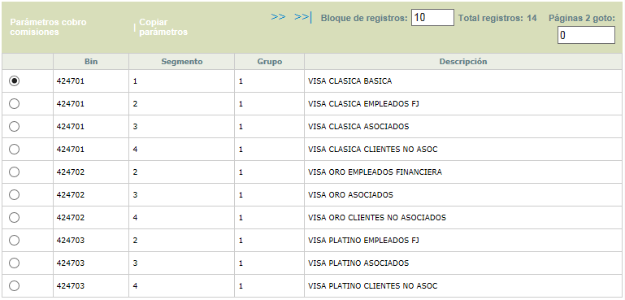
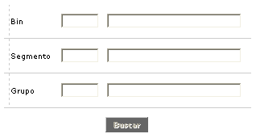
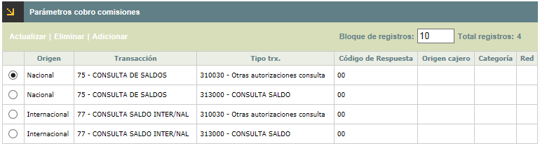
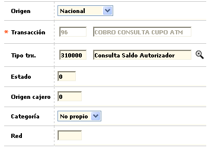
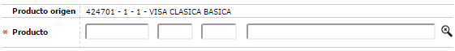

Parámetros de comisiones
Mediante esta opción la entidad define a cuáles de sus productos se les aplicará el costo correspondiente, al momento de efectuar el cargue de comisiones por uso de cajeros.
El formulario cuenta con un filtro de búsqueda y enlaces a las funcionalidades de Parámetros cobro comisiones, Copiar Parámetros.

Filtro: Se pueden realizar consultas a través de las siguientes opciones:

|
Bin |
Campo con lista de valores de la cual se selecciona el Bin por el cual se desea filtrar. Este criterio puede combinarse con el Segmento y Grupo de Afinidad, que son los otros dos componentes del producto. |
|
Producto |
Campo con lista de valores de la cual se selecciona el Segmento por el cual se desea filtrar. Este criterio puede combinarse con el Bin y Grupo de Afinidad, que son los otros dos componentes del producto. |
|
Grupo de afinidad |
Campo con lista de valores de la cual se selecciona el Grupo de Afinidad por el cual se desea filtrar. Este criterio puede combinarse con el Bin y Segmento, que son los otros dos componentes del producto. |
Parámetros cobro comisiones: Si el usuario invoca esta opción se despliega un formulario con los siguientes campos:

Adicionar: Si el usuario invoca esta opción, se despliega un formulario con los siguientes campos. A través de estos, se definen las características del registro para que se asocie a determinada transacción del cliente.

|
Origen |
Campo con lista de valores adjunta de la cual la entidad selecciona si el registro que se identifica en el archivo de comisiones cajeros corresponde a nacional o internacional. |
|
Transacción |
Campo obligatorio con lista de valores de la cual la entidad selecciona la Transacción que se asociará y presentará al cliente de acuerdo con las características del registro. |
|
Tipo transacción |
En este campo la entidad identifica el registro que viene en el archivo de autorizaciones. |
|
Código de respuesta |
Corresponde a la definición del código de respuesta del autorizador. |
|
Origen cajero |
Campo en el cual la entidad identifica el origen del cajero del registro que viene en el archivo de autorizaciones. |
|
Categoría |
En este campo la entidad selecciona de la lista de valores si el registro que se identifica en el archivo de comisiones cajeros corresponde a Propio, No propio u Otro, esta última opción es para uso futuro. |
|
Red |
Campo en el cual la entidad identifica la red del registro que viene en el archivo de autorizaciones. |
Actualizar: Si el usuario invoca la opción Actualizar se despliega un nuevo formulario en el cualel único campo no modificable es el de Transacción.

Copiar parámetros : Si el usuario invoca la opción, copia los parametros de acuerdo al boton de seleccion elegido, esté copia los parametros del producto.
